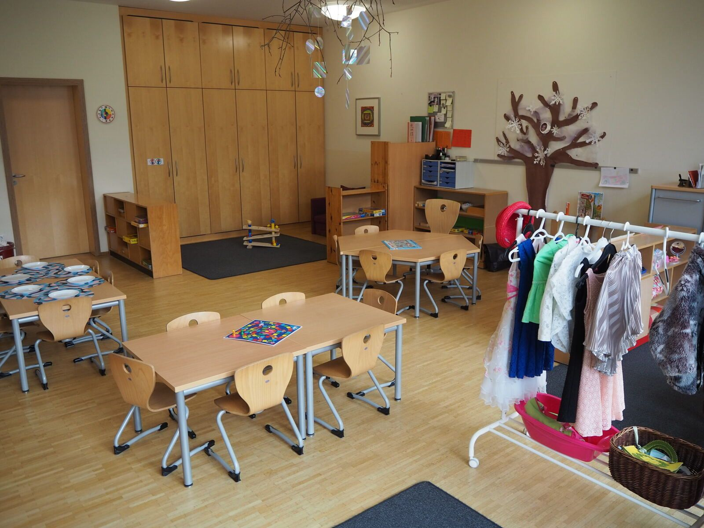
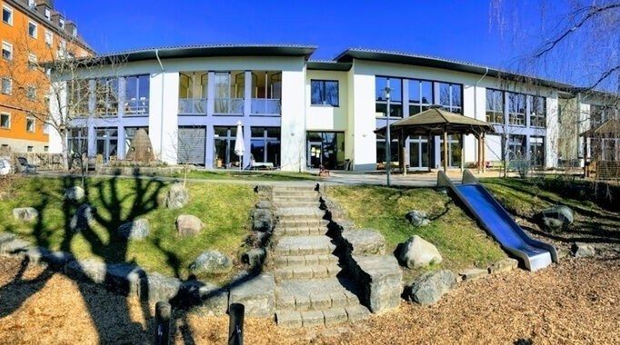
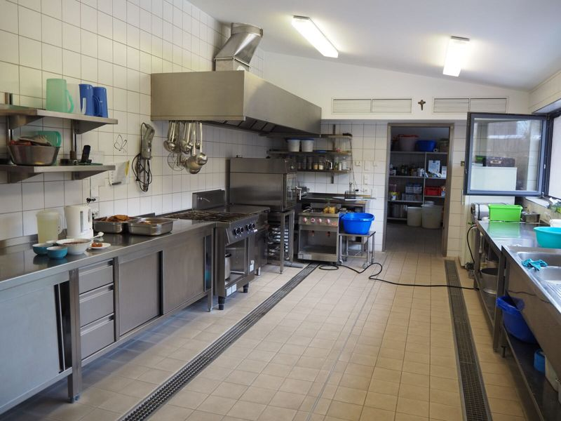
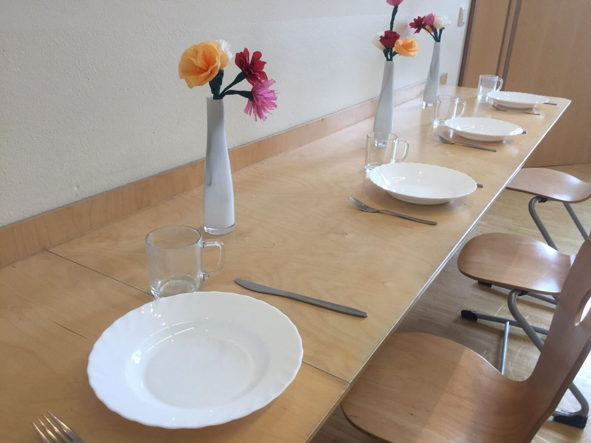
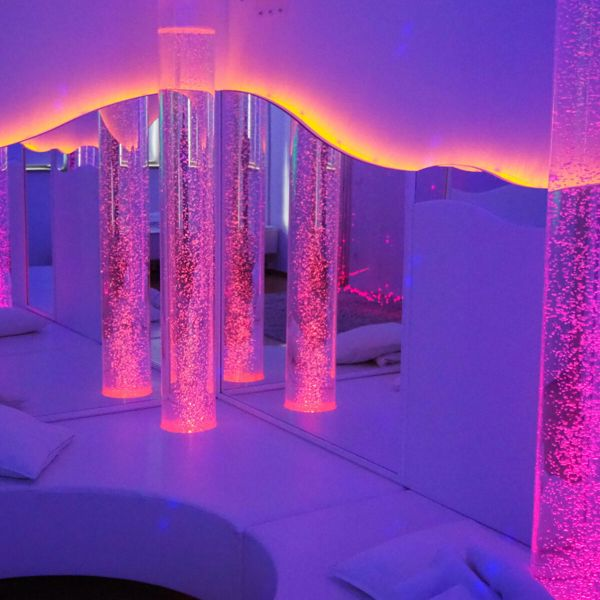
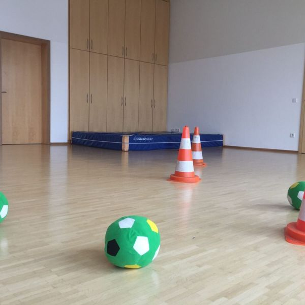
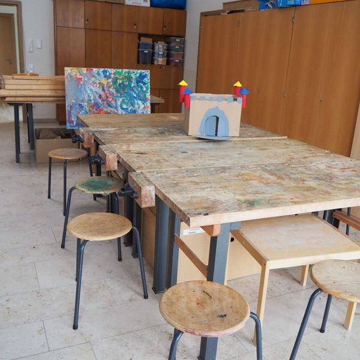
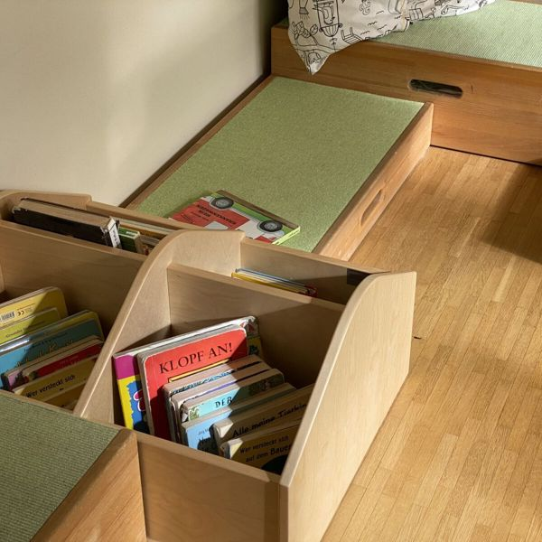
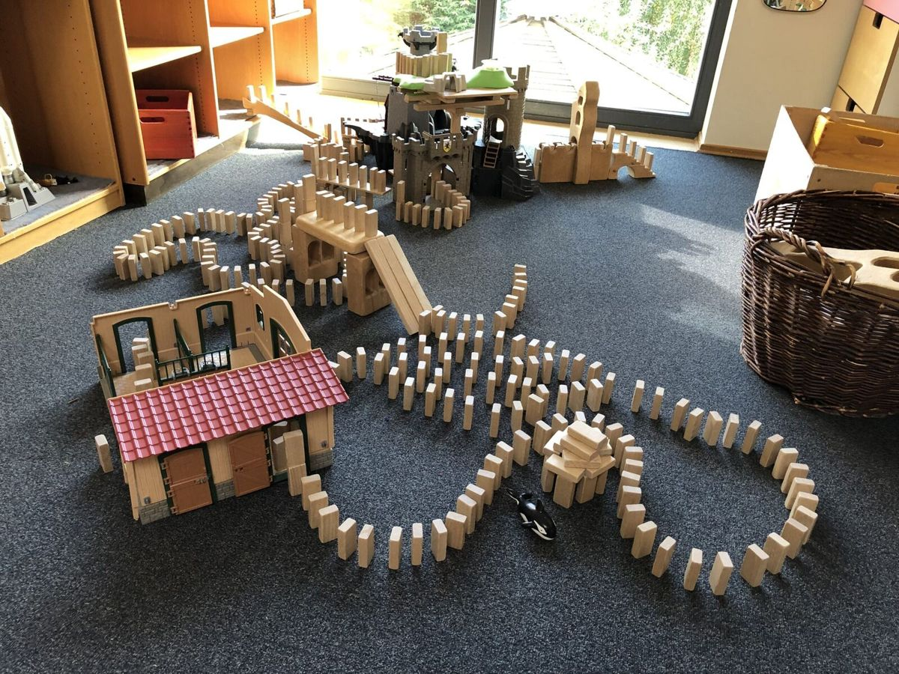

Kita und Hort in Würzburg-Grombühl
Für Kinder von 11 Monaten bis 16 Jahren, Montag bis Freitag ab 6:45 Uhr.
Anfahrt und Öffnungszeiten
Lindleinstraße
Würzburg-Grombühl Weg anzeigen
Würzburg-Grombühl Weg anzeigen
- Mo bis Fr
- 6:45–18:00
- Sa und So
- geschlossen
- Krippe und Kindergartenbis 16:30 Uhr
- Hortbis 18:00 Uhr, auch in den Ferien

Drei Bereiche in einem Haus
Viele Kinder bleiben von der Krippe bis zum Ende der Grundschule bei uns. Das Mittagessen kocht die eigene Küche.
Ein Tag im Kindergarten
- Bringzeit8:00–9:00
- Angebote, Turnen, Englisch10:00–11:00
- Morgenkreis11:00–11:30
- Warmes Mittagessen12:30
- Brotzeit15:30


Das Haus und sein Team
Getragen wird das Haus vom Kath. Kinder- und Jugendhort Grombühl e. V. Die Einrichtung leitet Petra Lachnit. Im Hort begleiten Erzieherinnen und Erzieher die Hausaufgaben und korrigieren sie, freitags geht es auf Ausflug, und am Ende der Sommerferien fährt der Hort eine Woche in eine Berghütte nach Österreich.
Pädagogik im Hort lesen



Anmeldung für einen Platz
Wir melden uns per E-Mail und laden Sie zum Kennenlernen ein.
